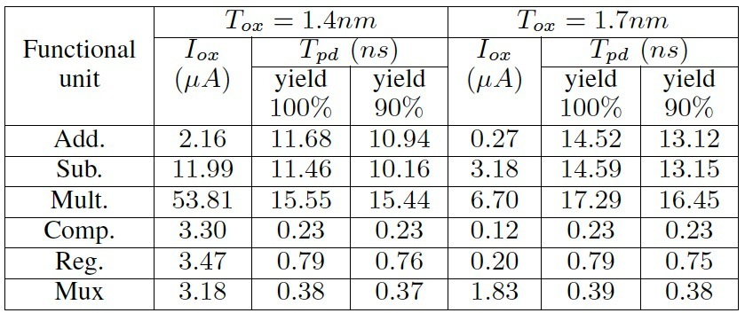
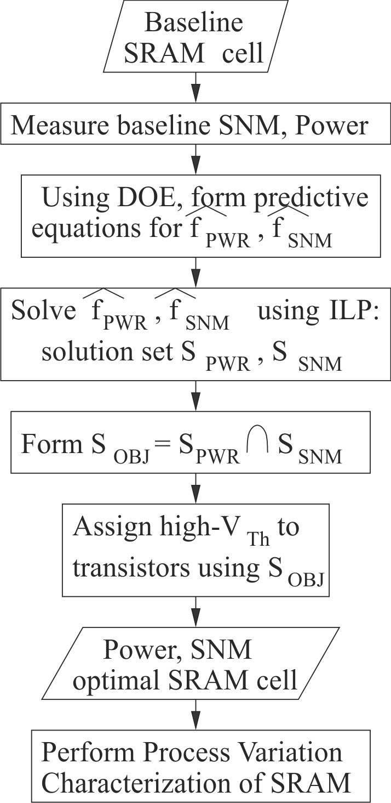

Welcome to Website of Prof. Saraju P. Mohanty
NSF Award CNS-0854182: Infrastructure Acquisition for Statistical Power, Leakage, and Timing Modeling Towards Realization of Robust Complex Nanoelectronics Circuits
Project Scope
Accurate
modeling of power, leakage, and timing while accounting for process
variations is
crucial for making correct decisions on design for manufacturing. There
is
pressing need for statistical power and timing models and estimators
that allow
a design engineer to use the technology and make fast design space
exploration
for power, leakage, and performance at the architecture or system level
without
resorting to a complete synthesis flow, from system to physical level.
Unfortunately, no comprehensive models or tools exist for accurate
estimation
during digital system design when the target technology is nano-CMOS.
Some
forms of the power dissipation, such as junction tunneling, gate-oxide,
and
gate-induced drain leakage have not received much attention.
Process-variation-aware modeling of any of the current components or
timing is
significantly challenging when treated for register-transfer level
(RTL) or
architecture level design. In order to
facilitate the robust design of complex nanoelectronics (nano-CMOS
silicon
dioxide/polysilicon or high-κ/metal gate) circuits we propose research
leading
to the development of a 32nm logic library, and associated logic level
and RTL
statistical power, leakage, and delay models.
The educational impact of the project is 3-fold: impact on curricula at
UNT, impact on curricula of other researchers who will use this
infrastructure, and impact on the community colleges around the
Dallas-Fort Worth metroplex. To
conduct research on nanoscale CMOS modeling that can be used for
realization of robust circuits, and to make the deliverables available
to the VLSI and educational communities, the project utilizes the
following infrastructure:
- Specialized equipment to support this research: one each mixed-signal analyzer, probing station and arbitrary waveform generator for sample data collection, probing and analysis for comparative validation of models with actual data.
- A high-end, 4 processor server with 16-GB local memory and 4-TB RAID5 storage to be used by 2 faculty members and 10 students for nanoelectronics data acquisition, control, and storage.
- Support for research and development personnel to develop the models and library, to validate the methodology, to help in writing a designer's guide, and to maintain the infrastructure.
Project Personnel
Faculty:
- Saraju
P. Mohanty (Principal Investigator) -- Contributions to the Project
include: Co-ordinating the overall project, generating new ideas and
themes for publication, writing the research outcomes as papers, and
making conference presentations.
- Elias
Kougianos (Co-Principal Investigator) -- Contributions
to the Project include: Building the infrastructure,
training students on tools, and writing the research outcomes as
papers.
Students:
The
contributions include -- Implementing the ideas, generating the
results, compiling results for publication, and making conference
presentations.
- Oghenekarho Okobiah:
Ph.D.(Computer Science and Engineering) candidate,
Dissertation Proposal: "Geostatistical Inspired Metamodeling and
Optimization of Nanoscale Analog Circuits", University of North
Texas, from Spring 2012, major
professor - Mohanty,
co-major - Kougianos. (Received
scholarship for ACM A.M. Turing Centenary Celebration 2012.)
(Received
scholarship for ACM SIGDA Design Automation Summer School 2011.)
- Geng Zheng: Ph.D.(Computer Science and Engineering) candidate, Dissertation Proposal: "Layout-Accurate Ultra-Fast System Level Design Exploration Through Verilog-AMS", Department of Computer Science and Engineering, University of North Texas, Fall 2011, major professor - Mohanty, co-major - Kougianos. (Received scholarship for ACM A.M. Turing Centenary Celebration 2012.) (Received scholarship for ACM SIGDA Design Automation Summer School 2011.)
- Garima Thakral: Ph. D. (Computer Science and Engineering), Dissertation: "Process-Voltage-Temperature Aware Nanoscale Circuit Optimization", Department of Computer Science and Engineering, University of North Texas, Fall 2010, major professor - Mohanty, co-major - Kougianos. (First UNT woman Computer Science and Engineering Ph.D. with VLSI specialization.) (First Employment: Aperia Solutions)
- Mohana A. L. Dubasi: M. S. (Computer Engineering), Summer 2011.
Project Publications
- O. Garitselov, S. P. Mohanty, and E. Kougianos, "A Comparative Study of Metamodels for Fast and Accurate Simulation of Nano-CMOS Circuits", IEEE Transactions on Semiconductor Manufacturing (TSM), Vol. 25, No. 1, February 2012, pp. 26--36.
- S. P. Mohanty, J. Singh, E. Kougianos, and D. K. Pradhan, "Statistical DOE-ILP Based Power-Performance-Process (P3) Optimization of Nano-CMOS SRAM", Elsevier The VLSI Integration Journal, Vol. 45, No. 1, January 2012, pp. 33--45.
- S. Banerjee, J. Mathew, S. P. Mohanty, D. K. Pradhan, and M. J. Ciesielski, "A Variation-Aware TED-Based Approach for Nano-CMOS RTL Leakage Optimization", Special Issue on VLSI Design 2011, ASP Journal of Low Power Electronics (JOLPE), Vol. 7, No. 4, December 2011, pp. 471--481.
- G. Thakral, S. P. Mohanty, D. K. Pradhan, and E. Kougianos, "DOE-ILP Based Simultaneous Power and Read Stability Optimization in Nano-CMOS SRAM", Special Issue on VLSI Design 2010, ASP Journal of Low Power Electronics (JOLPE), Vol. 6, No. 3, October 2010, pp. 390--400.
- S. P. Mohanty and D. K. Pradhan, "ULS: A Dual-Vth/High-κ Nano-CMOS Universal Level Shifter for System-Level Power Management", Special Issue on Design Techniques for Energy Harvesting, ACM Journal on Emerging Technologies in Computing Systems (JETC), Vol. 6, No. 2, June 2010, pp. 8:1--8:26.
- D. Ghai, S. P. Mohanty, and E. Kougianos, "A Variability Tolerant System-on-Chip Ready Nano-CMOS Analog-to-Digital Converter (ADC)", Taylor & Francis International Journal of Electronics (IJE), Vol. 97, No. 4, April 2010, pp. 421--440.
- O. Garitselov, S. P. Mohanty, E. Kougianos, and G. Zheng, "Particle Swarm Optimization over Non-Polynomial Metamodels for Fast Process Variation Resilient Design of Nano-CMOS PLL", in Proceedings of the 21st ACM/IEEE Great Lakes Symposium on VLSI (GLSVLSI), pp. 255--258, 2012 (blind review).
- O. Garitselov, S. P. Mohanty, E. Kougianos, and O. Okobiah, "Metamodel-Assisted Ultra-Fast Memetic Optimization of a PLL for WiMax and MMDS Applications", in Proceedings of the 13th IEEE International Symposium on Quality Electronic Design (ISQED), pp. 580--585, 2012 (blind review).
- O. Okobiah, S. P. Mohanty, E. Kougianos, and O. Garitselov, "Kriging-Assisted Ultra-Fast Simulated-Annealing Optimization of a Clamped Bitline Sense Amplifier", in Proceedings of the 25th IEEE International Conference on VLSI Design (VLSID), pp. 310--315, 2012 (blind review, 71 papers accepted out of 223 submissions, acceptance rate -- 31.8%).
- O. Garitselov, S. P. Mohanty, and E. Kougianos, "Fast-Accurate Non-Polynomial Metamodeling for nano-CMOS PLL Design Optimization", in Proceedings of the 25th IEEE International Conference on VLSI Design (VLSID), pp. 316--321, 2012 (blind review, 71 papers accepted out of 223 submissions, acceptance rate -- 31.8%).
- S. Banerjee, J. Mathew, D. K. Pradhan, S. P. Mohanty, and M. Ciesielski, "Variation-Aware TED-Based Approach for Nano-CMOS RTL Leakage Optimization", in Proceedings of the 24th IEEE International Conference on VLSI Design (VLSID), pp. 304--309, 2011 (blind review, 66 papers accepted out of 330 submissions, acceptance rate -- 20.0%).
- O. Garitselov, S. P. Mohanty, and E. Kougianos, "Fast Optimization of Nano-CMOS Mixed-Signal Circuits Through Accurate Metamodeling", in Proceedings of the 12th IEEE International Symposium on Quality Electronic Design (ISQED), pp. 405--410, 2011 (blind review, 92 regular papers and 34 poster papers accepted out of 290 submissions, acceptance rate - 43.4%).
- O. Garitselov, S. P. Mohanty, E. Kougianos, and P. Patra, "Nano-CMOS Mixed-Signal Circuit Metamodeling Techniques: A Comparative Study", in Proceedings of the 1st IEEE International Symposium on Electronic System Design (ISED), pp. 191--196, 2010 (blind review, 41 papers accepted out of 120 submissions, acceptance rate -- 34.1%).
- S. Banerjee, J. Mathew, D. K. Pradhan, S. P. Mohanty, and M. Ciesielski, "A Taylor Expansion Diagram Approach for Nano-CMOS RTL Leakage Optimization", in Proceedings of the 1st IEEE International Symposium on Electronic System Design (ISED), pp. 71--76, 2010 (blind review, 41 papers accepted out of 120 submissions, acceptance rate -- 34.1%).
- J. Singh, D. S. Aswar, S. P. Mohanty, and D. K. Pradhan, "A 2-Port 6T SRAM Bitcell Design with Multi-Port Capabilities at Reduced Area Overhead", in Proceedings of the 11th IEEE International Symposium on Quality Electronic Design (ISQED), pp. 131-138, 2010 (blind review, 84 regular papers accepted out of 270 submissions, acceptance rate - 31.1%).
- G. Thakral, S. P. Mohanty, D. Ghai, and D. K. Pradhan, "P3 (Power-Performance-Process) Optimization of Nano-CMOS SRAM using Statistical DOE-ILP", in Proceedings of the 11th IEEE International Symposium on Quality Electronic Design (ISQED), pp. 176-183, 2010 (blind review, 84 regular papers and 40 poster papers accepted out of 270 submissions, acceptance rate - 45.9%).
- G. Thakral, S. P. Mohanty, D. Ghai, and D. K. Pradhan, "A Combined DOE-ILP Based Power and Read Stability Optimization in Nano-CMOS SRAM", in Proceedings of the 23rd IEEE International Conference on VLSI Design (VLSID), pp. 45--50, 2010 (blind review, 70 papers accepted out of 320 submissions, acceptance rate - 21.8%).
- S. P. Mohanty, D. Ghai, and E. Kougianos, "A P4VT (Power-Performance-Process-Parasitic-Voltage-Temperature) Aware Dual-VTh Nano-CMOS VCO", in Proceedings of the 23rd IEEE International Conference on VLSI Design (VLSID), pp. 99-104, 2010 (blind review, 70 papers accepted out of 320 submissions, acceptance rate - 21.8%).
- S. P. Mohanty and D. K. Pradhan, "Tabu Search Based Gate Leakage Optimization using DKCMOS Library in Architecture Synthesis", in Proceedings of the 12th IEEE International Conference on Information Technology (ICIT), pp. 3-9, 2009 (blind review, 54 papers accepted out of 148 submissions, acceptance rate " 36.4%).
- S. P. Mohanty and B. K. Panigrahi, "ILP Based Leakage Optimization During Nano-CMOS RTL Synthesis: A DOXCMOS Versus DTCMOS Perspective", in Proceedings of the IEEE International Symposium on Biologically Inspired Computing And Applications (BICA), pp. 1367--1372, 2009 (70 papers accepted out of 130 submissions, acceptance rate -- 53.8%).
Project Deliverables
Logic-Level cell library:
Gate Oxide Leakage and Propagation Delay of Standard Logic Cells for 45nm CMOS. |
Gate Leakage and Propagation Delay versus Dielectric Constants for Universal Logic Cells for 45nm CMOS. |
Gate Leakage and Propagation Delay versus Dielectric Thickness for Universal Logic Cells for 45nm CMOS. |
Gate Leakage and Propagation Delay versus Supply Voltage for Universal Logic Cells for 45nm CMOS. |
Register-Transfer Level (RTL) component library:
RTL Library for 45nm CMOS for Two Diffeerent Oxide Thickness. |
|  |
RTL Library for 45nm CMOS for Two Diffeerent Dielectric Constants. |
Design Optimization Flows:
|  |
|
| Robust Memory
Design Flow -- 1. |
Robust Memory
Design Flow -- 2. |
 |
|
| RTL
Optimization Flow for Leakage, Delay, and Yield Tradeoffs. |
Fast
Single Iteration Physical Design Optimization Flow. |
Metamodel-Based Design Optimization of Complex AMS-SoC Components:
| Metamodel Based
Design Optimization Flow. |
Metamodel Generation
Flow. |
| Sumulation
Annealing based Optimization Algorithm. |
Artificial
Bee Colony based Optimization Algorithm. |
Physical Design of Complex AMS-SoC Components:
 |
|
| P4VT
Optimal Voltage Controlled Oscillator (VCO) Physical Design for 90nm
CMOS. |
6-bit Analog to Digital Converter (ADC) Physical Design for 90nm CMOS. |
| Ring Oscillator
Physical Design for 45nm CMOS. |
Phased-Locked Loop (PLL) Design for 180nm CMOS. |
Nanoelectronics Research and Education Infrastructure:
User's Guide for Design Optimization
A user's guide on describing design flow, metamodel creation, and design optimization is available here.
Project Infrastructures
High-End Server:
A Dell
PowerEdge R710 was acquired through this project. It has two
high-performance Intel® Xeon® X5570, 2.93GHz, 8M Cache, quad-core
processors. The two processors utilize 24GB Memory (6x4GB),
1333MHz Dual Ranked RDIMMs. The Centos 5.0 Enterprise Linux
Operating System manages the resources of the server. A total of six
3.5-inch 1TB Hard Drives provide ample storage during execution. The
high-performance server is used for data acquisition, modeling, and
managing the storage. It is also used for intensive simulations
that the individual experiment stations cannot run (e.g. high-accuracy
Monte Calro simulations).
High-End
Computing and Server and RAID Storage Server acquired at the NSDL
through this project.
RAID Storage:
A Dell PowerVault NX3000 network attached storage based on Windows Storage 2008 is acquired. The hardware consists of two high-performance Intel® Xeon ® X5570®, 2.93GHz, 8M Cache, quad-core processors using 24GB Memory. A total of six 3.5-inch 1TB Hard Drives provide ample storage during execution. The RAID storage is used to store the data that is being generated for simulation and modeling of the circuits. They are backing of the individual workstations to protect the data, manuscripts, and reports.
Windows 7 Workstations with X-win32 Client:
The
workstations are arranged in a Client-Server
Model. The high-performance server has heavy-duty softwares. The
client-ends have light-duty softwares.
Meiji Techno
PSESBD80520K 8-inch probing station:
Home |
Last updated on 01 Jan 2013 (Tuesday). © Saraju P. Mohanty